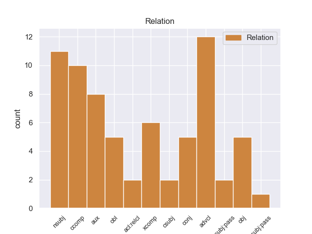
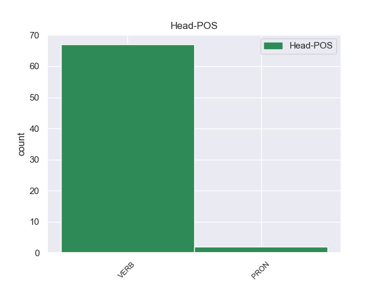
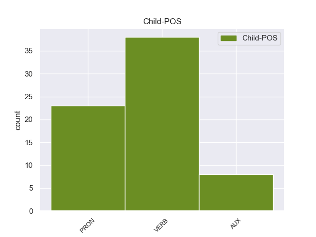

Distribution of features within this leaf



Agreement Rules sorted by frequency.
- When the dependent token is the nominal subject(nsubj) of the head token,
1 Κατά _ _ _ _ 0 _ _ _
2 την _ _ _ _ 0 _ _ _
3 τουρκοκρατία _ _ _ _ 0 _ _ _
4 ονομάστηκε _ _ _ _ 0 _ _ _
5 Μούρτος _ _ _ _ 0 _ _ _
6 από _ _ _ _ 0 _ _ _
7 το _ _ _ _ 0 _ _ _
8 όνομα _ _ _ _ 0 _ _ _
9 του _ _ _ _ 0 _ _ _
10 προκρίτου _ _ _ _ 0 _ _ _
11 , _ _ _ _ 0 _ _ _
12 ο _ _ _ _ 0 _ _ _
13 οποίος οποίος PRON PRON Case=Nom|Gender=Masc|Number=Sing|Person=3|PronType=Rel 14 nsubj _ _
14 λαφυραγωγούσε λαφυραγωγώ VERB VERB Aspect=Imp|Mood=Ind|Number=Sing|Person=3|Tense=Past|VerbForm=Fin|Voice=Act 0 _ _ _
15 τα _ _ _ _ 0 _ _ _
16 διερχόμενα _ _ _ _ 0 _ _ _
17 εμπορικά _ _ _ _ 0 _ _ _
18 πλοία _ _ _ _ 0 _ _ _
19 . _ _ _ _ 0 _ _ _
1 Τους _ _ _ _ 0 _ _ _
2 έγραφε _ _ _ _ 0 _ _ _
3 ότι _ _ _ _ 0 _ _ _
4 οι _ _ _ _ 0 _ _ _
5 επαναστάτες _ _ _ _ 0 _ _ _
6 θα _ _ _ _ 0 _ _ _
7 κρατούσαν κρατώ VERB VERB Aspect=Perf|Mood=Ind|Number=Plur|Person=3|Tense=Past|VerbForm=Fin|Voice=Act 0 _ _ _
8 τις _ _ _ _ 0 _ _ _
9 θέσεις _ _ _ _ 0 _ _ _
10 τους _ _ _ _ 0 _ _ _
11 μέχρι _ _ _ _ 0 _ _ _
12 να _ _ _ _ 0 _ _ _
13 σκοτωθεί _ _ _ _ 0 _ _ _
14 κι _ _ _ _ 0 _ _ _
15 ο _ _ _ _ 0 _ _ _
16 τελευταίος _ _ _ _ 0 _ _ _
17 από _ _ _ _ 0 _ _ _
18 τις _ _ _ _ 0 _ _ _
19 οβίδες _ _ _ _ 0 _ _ _
20 των _ _ _ _ 0 _ _ _
21 ευρωπαϊκών _ _ _ _ 0 _ _ _
22 πολεμικών _ _ _ _ 0 _ _ _
23 προκειμένου _ _ _ _ 0 _ _ _
24 να _ _ _ _ 0 _ _ _
25 μην _ _ _ _ 0 _ _ _
26 αφήσουν αφήνω VERB VERB Aspect=Perf|Mood=Ind|Number=Plur|Person=3|VerbForm=Fin|Voice=Act 7 advcl _ _
27 τους _ _ _ _ 0 _ _ _
28 Τούρκους _ _ _ _ 0 _ _ _
29 να _ _ _ _ 0 _ _ _
30 πάρουν _ _ _ _ 0 _ _ _
31 το _ _ _ _ 0 _ _ _
32 Ακρωτήρι _ _ _ _ 0 _ _ _
33 . _ _ _ _ 0 _ _ _
1 Πρέπει πρέπει AUX AUX Aspect=Imp|Mood=Ind|Number=Sing|Person=3|Tense=Pres|VerbForm=Fin|Voice=Act 3 aux _ _
2 να _ _ _ _ 0 _ _ _
3 επισημανθεί επισημαίνω VERB VERB Aspect=Perf|Mood=Ind|Number=Sing|Person=3|VerbForm=Fin|Voice=Pass 0 _ _ _
4 ότι _ _ _ _ 0 _ _ _
5 ο _ _ _ _ 0 _ _ _
6 Εισαγγελέας _ _ _ _ 0 _ _ _
7 Πλημμελειοδικών _ _ _ _ 0 _ _ _
8 υποστήριξε _ _ _ _ 0 _ _ _
9 σθεναρά _ _ _ _ 0 _ _ _
10 την _ _ _ _ 0 _ _ _
11 αίτηση _ _ _ _ 0 _ _ _
12 επιβολής _ _ _ _ 0 _ _ _
13 μέτρων _ _ _ _ 0 _ _ _
14 δικαστικής _ _ _ _ 0 _ _ _
15 επιτήρησης _ _ _ _ 0 _ _ _
16 που _ _ _ _ 0 _ _ _
17 υπέβαλαν _ _ _ _ 0 _ _ _
18 οι _ _ _ _ 0 _ _ _
19 ανακριτές _ _ _ _ 0 _ _ _
20 , _ _ _ _ 0 _ _ _
21 υπογραμμίζοντας _ _ _ _ 0 _ _ _
22 τη _ _ _ _ 0 _ _ _
23 σοβαρότητα _ _ _ _ 0 _ _ _
24 και _ _ _ _ 0 _ _ _
25 τη _ _ _ _ 0 _ _ _
26 φύση _ _ _ _ 0 _ _ _
27 της _ _ _ _ 0 _ _ _
28 υπόθεσης _ _ _ _ 0 _ _ _
29 και _ _ _ _ 0 _ _ _
30 χαρακτηρίζοντας _ _ _ _ 0 _ _ _
31 μάλιστα _ _ _ _ 0 _ _ _
32 την _ _ _ _ 0 _ _ _
33 αίτηση _ _ _ _ 0 _ _ _
34 αυτή _ _ _ _ 0 _ _ _
35 ως _ _ _ _ 0 _ _ _
36 απαραίτητη _ _ _ _ 0 _ _ _
37 επί _ _ _ _ 0 _ _ _
38 της _ _ _ _ 0 _ _ _
39 αρχής _ _ _ _ 0 _ _ _
40 . _ _ _ _ 0 _ _ _
1 Τους _ _ _ _ 0 _ _ _
2 έγραφε γράφω VERB VERB Aspect=Imp|Mood=Ind|Number=Sing|Person=3|Tense=Past|VerbForm=Fin|Voice=Act 0 _ _ _
3 ότι _ _ _ _ 0 _ _ _
4 οι _ _ _ _ 0 _ _ _
5 επαναστάτες _ _ _ _ 0 _ _ _
6 θα _ _ _ _ 0 _ _ _
7 κρατούσαν κρατώ VERB VERB Aspect=Perf|Mood=Ind|Number=Plur|Person=3|Tense=Past|VerbForm=Fin|Voice=Act 2 ccomp _ _
8 τις _ _ _ _ 0 _ _ _
9 θέσεις _ _ _ _ 0 _ _ _
10 τους _ _ _ _ 0 _ _ _
11 μέχρι _ _ _ _ 0 _ _ _
12 να _ _ _ _ 0 _ _ _
13 σκοτωθεί _ _ _ _ 0 _ _ _
14 κι _ _ _ _ 0 _ _ _
15 ο _ _ _ _ 0 _ _ _
16 τελευταίος _ _ _ _ 0 _ _ _
17 από _ _ _ _ 0 _ _ _
18 τις _ _ _ _ 0 _ _ _
19 οβίδες _ _ _ _ 0 _ _ _
20 των _ _ _ _ 0 _ _ _
21 ευρωπαϊκών _ _ _ _ 0 _ _ _
22 πολεμικών _ _ _ _ 0 _ _ _
23 προκειμένου _ _ _ _ 0 _ _ _
24 να _ _ _ _ 0 _ _ _
25 μην _ _ _ _ 0 _ _ _
26 αφήσουν _ _ _ _ 0 _ _ _
27 τους _ _ _ _ 0 _ _ _
28 Τούρκους _ _ _ _ 0 _ _ _
29 να _ _ _ _ 0 _ _ _
30 πάρουν _ _ _ _ 0 _ _ _
31 το _ _ _ _ 0 _ _ _
32 Ακρωτήρι _ _ _ _ 0 _ _ _
33 . _ _ _ _ 0 _ _ _
1 Τόσο _ _ _ _ 0 _ _ _
2 το _ _ _ _ 0 _ _ _
3 ζήτημα _ _ _ _ 0 _ _ _
4 της _ _ _ _ 0 _ _ _
5 ασυλίας _ _ _ _ 0 _ _ _
6 όσο _ _ _ _ 0 _ _ _
7 και _ _ _ _ 0 _ _ _
8 η _ _ _ _ 0 _ _ _
9 αίτηση _ _ _ _ 0 _ _ _
10 για _ _ _ _ 0 _ _ _
11 άρση _ _ _ _ 0 _ _ _
12 της _ _ _ _ 0 _ _ _
13 έχουν _ _ _ _ 0 _ _ _
14 σχέση _ _ _ _ 0 _ _ _
15 μόνο _ _ _ _ 0 _ _ _
16 με _ _ _ _ 0 _ _ _
17 το _ _ _ _ 0 _ _ _
18 εάν _ _ _ _ 0 _ _ _
19 το _ _ _ _ 0 _ _ _
20 Δικαστήριο _ _ _ _ 0 _ _ _
21 μπορεί μπορώ VERB VERB Aspect=Imp|Mood=Ind|Number=Sing|Person=3|Tense=Pres|VerbForm=Fin|Voice=Act 0 _ _ _
22 να _ _ _ _ 0 _ _ _
23 εκδώσει εκδίδω VERB VERB Aspect=Perf|Mood=Ind|Number=Sing|Person=3|VerbForm=Fin|Voice=Act 21 xcomp _ _
24 δεσμευτικά _ _ _ _ 0 _ _ _
25 βουλεύματα _ _ _ _ 0 _ _ _
26 για _ _ _ _ 0 _ _ _
27 τον _ _ _ _ 0 _ _ _
28 περιορισμό _ _ _ _ 0 _ _ _
29 της _ _ _ _ 0 _ _ _
30 ελεύθερης _ _ _ _ 0 _ _ _
31 μετακίνησης _ _ _ _ 0 _ _ _
32 των _ _ _ _ 0 _ _ _
33 βουλευτών _ _ _ _ 0 _ _ _
34 του _ _ _ _ 0 _ _ _
35 Ευρωπαϊκού _ _ _ _ 0 _ _ _
36 Κοινοβουλίου _ _ _ _ 0 _ _ _
37 ή _ _ _ _ 0 _ _ _
38 την _ _ _ _ 0 _ _ _
39 ελευθερία _ _ _ _ 0 _ _ _
40 τους _ _ _ _ 0 _ _ _
41 να _ _ _ _ 0 _ _ _
42 έρχονται _ _ _ _ 0 _ _ _
43 σε _ _ _ _ 0 _ _ _
44 επικοινωνία _ _ _ _ 0 _ _ _
45 με _ _ _ _ 0 _ _ _
46 άλλα _ _ _ _ 0 _ _ _
47 πρόσωπα _ _ _ _ 0 _ _ _
48 . _ _ _ _ 0 _ _ _
1 από _ _ _ _ 0 _ _ _
2 πέρυσι _ _ _ _ 0 _ _ _
3 η _ _ _ _ 0 _ _ _
4 Ευρωπαϊκή _ _ _ _ 0 _ _ _
5 Ένωση _ _ _ _ 0 _ _ _
6 συμμετέχει συμμετέχω VERB VERB Aspect=Imp|Mood=Ind|Number=Sing|Person=3|Tense=Pres|VerbForm=Fin|Voice=Act 0 _ _ _
7 σ _ _ _ _ 0 _ _ _
8 τα _ _ _ _ 0 _ _ _
9 καθήκοντα _ _ _ _ 0 _ _ _
10 της _ _ _ _ 0 _ _ _
11 Κοινής _ _ _ _ 0 _ _ _
12 Επιτροπής _ _ _ _ 0 _ _ _
13 Ελέγχου _ _ _ _ 0 _ _ _
14 της _ _ _ _ 0 _ _ _
15 Νότιας _ _ _ _ 0 _ _ _
16 Οσετίας _ _ _ _ 0 _ _ _
17 , _ _ _ _ 0 _ _ _
18 αλλά _ _ _ _ 0 _ _ _
19 μένουν μένω VERB VERB Aspect=Imp|Mood=Ind|Number=Plur|Person=3|Tense=Pres|VerbForm=Fin|Voice=Act 6 conj _ _
20 πολλά _ _ _ _ 0 _ _ _
21 να _ _ _ _ 0 _ _ _
22 γίνουν _ _ _ _ 0 _ _ _
23 ακόμα _ _ _ _ 0 _ _ _
24 για _ _ _ _ 0 _ _ _
25 να _ _ _ _ 0 _ _ _
26 καταφέρουμε _ _ _ _ 0 _ _ _
27 να _ _ _ _ 0 _ _ _
28 ακούγεται _ _ _ _ 0 _ _ _
29 η _ _ _ _ 0 _ _ _
30 φωνή _ _ _ _ 0 _ _ _
31 της _ _ _ _ 0 _ _ _
32 Ένωσης _ _ _ _ 0 _ _ _
33 σε _ _ _ _ 0 _ _ _
34 ορισμένους _ _ _ _ 0 _ _ _
35 μεσολαβητικούς _ _ _ _ 0 _ _ _
36 κύκλους _ _ _ _ 0 _ _ _
37 . _ _ _ _ 0 _ _ _
1 Είναι _ _ _ _ 0 _ _ _
2 παράλογος _ _ _ _ 0 _ _ _
3 ο _ _ _ _ 0 _ _ _
4 τρόπος _ _ _ _ 0 _ _ _
5 με _ _ _ _ 0 _ _ _
6 τον _ _ _ _ 0 _ _ _
7 οποίο οποίος PRON PRON Case=Acc|Gender=Masc|Number=Sing|Person=3|PronType=Rel 8 obl _ _
8 πραγματοποιούνται πραγματοποιώ VERB VERB Aspect=Imp|Mood=Ind|Number=Plur|Person=3|Tense=Pres|VerbForm=Fin|Voice=Pass 0 _ _ _
9 οι _ _ _ _ 0 _ _ _
10 μεταφορές _ _ _ _ 0 _ _ _
11 σ _ _ _ _ 0 _ _ _
12 την _ _ _ _ 0 _ _ _
13 Ευρώπη _ _ _ _ 0 _ _ _
14 . _ _ _ _ 0 _ _ _
1 Πρέπει _ _ _ _ 0 _ _ _
2 να _ _ _ _ 0 _ _ _
3 επισημανθεί _ _ _ _ 0 _ _ _
4 ότι _ _ _ _ 0 _ _ _
5 ο _ _ _ _ 0 _ _ _
6 Εισαγγελέας _ _ _ _ 0 _ _ _
7 Πλημμελειοδικών _ _ _ _ 0 _ _ _
8 υποστήριξε _ _ _ _ 0 _ _ _
9 σθεναρά _ _ _ _ 0 _ _ _
10 την _ _ _ _ 0 _ _ _
11 αίτηση _ _ _ _ 0 _ _ _
12 επιβολής _ _ _ _ 0 _ _ _
13 μέτρων _ _ _ _ 0 _ _ _
14 δικαστικής _ _ _ _ 0 _ _ _
15 επιτήρησης _ _ _ _ 0 _ _ _
16 που που PRON PRON Case=Acc|Gender=Fem|Number=Sing|Person=3|PronType=Rel 17 obj _ _
17 υπέβαλαν υποβάλλω VERB VERB Aspect=Perf|Mood=Ind|Number=Plur|Person=3|Tense=Past|VerbForm=Fin|Voice=Act 0 _ _ _
18 οι _ _ _ _ 0 _ _ _
19 ανακριτές _ _ _ _ 0 _ _ _
20 , _ _ _ _ 0 _ _ _
21 υπογραμμίζοντας _ _ _ _ 0 _ _ _
22 τη _ _ _ _ 0 _ _ _
23 σοβαρότητα _ _ _ _ 0 _ _ _
24 και _ _ _ _ 0 _ _ _
25 τη _ _ _ _ 0 _ _ _
26 φύση _ _ _ _ 0 _ _ _
27 της _ _ _ _ 0 _ _ _
28 υπόθεσης _ _ _ _ 0 _ _ _
29 και _ _ _ _ 0 _ _ _
30 χαρακτηρίζοντας _ _ _ _ 0 _ _ _
31 μάλιστα _ _ _ _ 0 _ _ _
32 την _ _ _ _ 0 _ _ _
33 αίτηση _ _ _ _ 0 _ _ _
34 αυτή _ _ _ _ 0 _ _ _
35 ως _ _ _ _ 0 _ _ _
36 απαραίτητη _ _ _ _ 0 _ _ _
37 επί _ _ _ _ 0 _ _ _
38 της _ _ _ _ 0 _ _ _
39 αρχής _ _ _ _ 0 _ _ _
40 . _ _ _ _ 0 _ _ _
1 Επιθυμώ _ _ _ _ 0 _ _ _
2 επίσης _ _ _ _ 0 _ _ _
3 να _ _ _ _ 0 _ _ _
4 συγχαρώ _ _ _ _ 0 _ _ _
5 τον _ _ _ _ 0 _ _ _
6 εισηγητή _ _ _ _ 0 _ _ _
7 και _ _ _ _ 0 _ _ _
8 όλους _ _ _ _ 0 _ _ _
9 τους _ _ _ _ 0 _ _ _
10 συντάκτες _ _ _ _ 0 _ _ _
11 γνωμοδοτήσεων _ _ _ _ 0 _ _ _
12 για _ _ _ _ 0 _ _ _
13 την _ _ _ _ 0 _ _ _
14 εργασία _ _ _ _ 0 _ _ _
15 τους _ _ _ _ 0 _ _ _
16 σε _ _ _ _ 0 _ _ _
17 αυτό αυτός PRON PRON Case=Acc|Gender=Neut|Number=Sing|Person=3|PronType=Dem 0 _ _ _
18 που _ _ _ _ 0 _ _ _
19 εκ _ _ _ _ 0 _ _ _
20 πρώτης _ _ _ _ 0 _ _ _
21 όψεως _ _ _ _ 0 _ _ _
22 φαίνεται φαίνομαι VERB VERB Aspect=Imp|Mood=Ind|Number=Sing|Person=3|Tense=Pres|VerbForm=Fin|Voice=Pass 17 acl:relcl _ _
23 ένα _ _ _ _ 0 _ _ _
24 πολύ _ _ _ _ 0 _ _ _
25 απλό _ _ _ _ 0 _ _ _
26 θέμα _ _ _ _ 0 _ _ _
27 , _ _ _ _ 0 _ _ _
28 αλλά _ _ _ _ 0 _ _ _
29 όταν _ _ _ _ 0 _ _ _
30 υπεισέρχεται _ _ _ _ 0 _ _ _
31 κανείς _ _ _ _ 0 _ _ _
32 σ _ _ _ _ 0 _ _ _
33 τις _ _ _ _ 0 _ _ _
34 λεπτομέρειες _ _ _ _ 0 _ _ _
35 και _ _ _ _ 0 _ _ _
36 σ _ _ _ _ 0 _ _ _
37 την _ _ _ _ 0 _ _ _
38 ανάλυσή _ _ _ _ 0 _ _ _
39 του _ _ _ _ 0 _ _ _
40 , _ _ _ _ 0 _ _ _
41 αποδεικνύεται _ _ _ _ 0 _ _ _
42 εξαιρετικά _ _ _ _ 0 _ _ _
43 δύσκολο _ _ _ _ 0 _ _ _
44 . _ _ _ _ 0 _ _ _
1 Θέλω _ _ _ _ 0 _ _ _
2 να _ _ _ _ 0 _ _ _
3 σχολιάσω _ _ _ _ 0 _ _ _
4 τις _ _ _ _ 0 _ _ _
5 παρατηρήσεις _ _ _ _ 0 _ _ _
6 του _ _ _ _ 0 _ _ _
7 κ. _ _ _ _ 0 _ _ _
8 MacCormick _ _ _ _ 0 _ _ _
9 διότι _ _ _ _ 0 _ _ _
10 μου _ _ _ _ 0 _ _ _
11 φαίνεται φαίνομαι VERB VERB Aspect=Imp|Mood=Ind|Number=Sing|Person=3|Tense=Pres|VerbForm=Fin|Voice=Pass 0 _ _ _
12 ότι _ _ _ _ 0 _ _ _
13 διαμαρτυρείται διαμαρτυρώ VERB VERB Aspect=Imp|Mood=Ind|Number=Sing|Person=3|Tense=Pres|VerbForm=Fin|Voice=Pass 11 csubj _ _
14 υπερβολικά _ _ _ _ 0 _ _ _
15 . _ _ _ _ 0 _ _ _
1 Σε _ _ _ _ 0 _ _ _
2 μία _ _ _ _ 0 _ _ _
3 κοινή _ _ _ _ 0 _ _ _
4 δήλωση _ _ _ _ 0 _ _ _
5 που που PRON PRON Case=Nom|Gender=Fem|Number=Sing|Person=3|PronType=Rel 6 nsubj:pass _ _
6 υιοθετήθηκε υιοθετώ VERB VERB Aspect=Perf|Mood=Ind|Number=Sing|Person=3|Tense=Past|VerbForm=Fin|Voice=Pass 0 _ _ _
7 σ _ _ _ _ 0 _ _ _
8 τις _ _ _ _ 0 _ _ _
9 συνεδριάσεις _ _ _ _ 0 _ _ _
10 της _ _ _ _ 0 _ _ _
11 Επιτροπής _ _ _ _ 0 _ _ _
12 Συνεργασίας _ _ _ _ 0 _ _ _
13 πέρυσι _ _ _ _ 0 _ _ _
14 τον _ _ _ _ 0 _ _ _
15 Οκτώβριο _ _ _ _ 0 _ _ _
16 , _ _ _ _ 0 _ _ _
17 οι _ _ _ _ 0 _ _ _
18 τρεις _ _ _ _ 0 _ _ _
19 χώρες _ _ _ _ 0 _ _ _
20 εταίροι _ _ _ _ 0 _ _ _
21 εξέφρασαν _ _ _ _ 0 _ _ _
22 ρητώς _ _ _ _ 0 _ _ _
23 τη _ _ _ _ 0 _ _ _
24 χαρά _ _ _ _ 0 _ _ _
25 τους _ _ _ _ 0 _ _ _
26 για _ _ _ _ 0 _ _ _
27 τις _ _ _ _ 0 _ _ _
28 προθέσεις _ _ _ _ 0 _ _ _
29 της _ _ _ _ 0 _ _ _
30 Ένωσης _ _ _ _ 0 _ _ _
31 . _ _ _ _ 0 _ _ _
1 Πρέπει _ _ _ _ 0 _ _ _
2 να _ _ _ _ 0 _ _ _
3 επισημανθεί επισημαίνω VERB VERB Aspect=Perf|Mood=Ind|Number=Sing|Person=3|VerbForm=Fin|Voice=Pass 0 _ _ _
4 ότι _ _ _ _ 0 _ _ _
5 ο _ _ _ _ 0 _ _ _
6 Εισαγγελέας _ _ _ _ 0 _ _ _
7 Πλημμελειοδικών _ _ _ _ 0 _ _ _
8 υποστήριξε υποστηρίζω VERB VERB Aspect=Perf|Mood=Ind|Number=Sing|Person=3|Tense=Past|VerbForm=Fin|Voice=Act 3 csubj:pass _ _
9 σθεναρά _ _ _ _ 0 _ _ _
10 την _ _ _ _ 0 _ _ _
11 αίτηση _ _ _ _ 0 _ _ _
12 επιβολής _ _ _ _ 0 _ _ _
13 μέτρων _ _ _ _ 0 _ _ _
14 δικαστικής _ _ _ _ 0 _ _ _
15 επιτήρησης _ _ _ _ 0 _ _ _
16 που _ _ _ _ 0 _ _ _
17 υπέβαλαν _ _ _ _ 0 _ _ _
18 οι _ _ _ _ 0 _ _ _
19 ανακριτές _ _ _ _ 0 _ _ _
20 , _ _ _ _ 0 _ _ _
21 υπογραμμίζοντας _ _ _ _ 0 _ _ _
22 τη _ _ _ _ 0 _ _ _
23 σοβαρότητα _ _ _ _ 0 _ _ _
24 και _ _ _ _ 0 _ _ _
25 τη _ _ _ _ 0 _ _ _
26 φύση _ _ _ _ 0 _ _ _
27 της _ _ _ _ 0 _ _ _
28 υπόθεσης _ _ _ _ 0 _ _ _
29 και _ _ _ _ 0 _ _ _
30 χαρακτηρίζοντας _ _ _ _ 0 _ _ _
31 μάλιστα _ _ _ _ 0 _ _ _
32 την _ _ _ _ 0 _ _ _
33 αίτηση _ _ _ _ 0 _ _ _
34 αυτή _ _ _ _ 0 _ _ _
35 ως _ _ _ _ 0 _ _ _
36 απαραίτητη _ _ _ _ 0 _ _ _
37 επί _ _ _ _ 0 _ _ _
38 της _ _ _ _ 0 _ _ _
39 αρχής _ _ _ _ 0 _ _ _
40 . _ _ _ _ 0 _ _ _
Disagree Examples:
1 Για _ _ _ _ 0 _ _ _
2 τον _ _ _ _ 0 _ _ _
3 λόγο _ _ _ _ 0 _ _ _
4 αυτό _ _ _ _ 0 _ _ _
5 επισημαίνω επισημαίνω VERB VERB Aspect=Imp|Mood=Ind|Number=Sing|Person=1|Tense=Pres|VerbForm=Fin|Voice=Act 0 _ _ _
6 ότι _ _ _ _ 0 _ _ _
7 , _ _ _ _ 0 _ _ _
8 σύμφωνα _ _ _ _ 0 _ _ _
9 με _ _ _ _ 0 _ _ _
10 τη _ _ _ _ 0 _ _ _
11 δική _ _ _ _ 0 _ _ _
12 μας _ _ _ _ 0 _ _ _
13 άποψη _ _ _ _ 0 _ _ _
14 , _ _ _ _ 0 _ _ _
15 η _ _ _ _ 0 _ _ _
16 απαγόρευση _ _ _ _ 0 _ _ _
17 του _ _ _ _ 0 _ _ _
18 κόμματος _ _ _ _ 0 _ _ _
19 HADEP _ _ _ _ 0 _ _ _
20 θα _ _ _ _ 0 _ _ _
21 παραβίαζε παραβιάζω VERB VERB Aspect=Imp|Mood=Ind|Number=Sing|Person=3|Tense=Past|VerbForm=Fin|Voice=Act 5 ccomp _ _
22 τις _ _ _ _ 0 _ _ _
23 δικές _ _ _ _ 0 _ _ _
24 μας _ _ _ _ 0 _ _ _
25 πολιτικές _ _ _ _ 0 _ _ _
26 αρχές _ _ _ _ 0 _ _ _
27 . _ _ _ _ 0 _ _ _
1 Πραγματικά _ _ _ _ 0 _ _ _
2 , _ _ _ _ 0 _ _ _
3 δεν _ _ _ _ 0 _ _ _
4 υπάρχει _ _ _ _ 0 _ _ _
5 λόγος _ _ _ _ 0 _ _ _
6 να _ _ _ _ 0 _ _ _
7 περιμένουμε περιμένω VERB VERB Aspect=Imp|Mood=Ind|Number=Plur|Person=1|Tense=Pres|VerbForm=Fin|Voice=Act 0 _ _ _
8 τρία _ _ _ _ 0 _ _ _
9 χρόνια _ _ _ _ 0 _ _ _
10 απλώς _ _ _ _ 0 _ _ _
11 και _ _ _ _ 0 _ _ _
12 μόνο _ _ _ _ 0 _ _ _
13 για _ _ _ _ 0 _ _ _
14 να _ _ _ _ 0 _ _ _
15 υποβάλει υποβάλλω VERB VERB Aspect=Perf|Mood=Ind|Number=Sing|Person=3|VerbForm=Fin|Voice=Act 7 advcl _ _
16 προτάσεις _ _ _ _ 0 _ _ _
17 η _ _ _ _ 0 _ _ _
18 Επιτροπή _ _ _ _ 0 _ _ _
19 . _ _ _ _ 0 _ _ _
1 Ο _ _ _ _ 0 _ _ _
2 λόγος _ _ _ _ 0 _ _ _
3 που _ _ _ _ 0 _ _ _
4 διαθέτουμε _ _ _ _ 0 _ _ _
5 κανόνες _ _ _ _ 0 _ _ _
6 για _ _ _ _ 0 _ _ _
7 τις _ _ _ _ 0 _ _ _
8 κρατικές _ _ _ _ 0 _ _ _
9 ενισχύσεις _ _ _ _ 0 _ _ _
10 είναι _ _ _ _ 0 _ _ _
11 η _ _ _ _ 0 _ _ _
12 διασφάλιση _ _ _ _ 0 _ _ _
13 της _ _ _ _ 0 _ _ _
14 ορθής _ _ _ _ 0 _ _ _
15 λειτουργίας _ _ _ _ 0 _ _ _
16 της _ _ _ _ 0 _ _ _
17 κοινής _ _ _ _ 0 _ _ _
18 αγοράς _ _ _ _ 0 _ _ _
19 και _ _ _ _ 0 _ _ _
20 πρέπει πρέπει AUX AUX Aspect=Imp|Mood=Ind|Number=Sing|Person=3|Tense=Pres|VerbForm=Fin|Voice=Act 22 aux _ _
21 να _ _ _ _ 0 _ _ _
22 καταργήσουμε καταργώ VERB VERB Aspect=Perf|Mood=Ind|Number=Plur|Person=1|VerbForm=Fin|Voice=Act 0 _ _ _
23 τους _ _ _ _ 0 _ _ _
24 φραγμούς _ _ _ _ 0 _ _ _
25 σ _ _ _ _ 0 _ _ _
26 τον _ _ _ _ 0 _ _ _
27 ανταγωνισμό _ _ _ _ 0 _ _ _
28 και _ _ _ _ 0 _ _ _
29 σ _ _ _ _ 0 _ _ _
30 το _ _ _ _ 0 _ _ _
31 ελεύθερο _ _ _ _ 0 _ _ _
32 εμπόριο _ _ _ _ 0 _ _ _
33 προκειμένου _ _ _ _ 0 _ _ _
34 να _ _ _ _ 0 _ _ _
35 επιτρέψουμε _ _ _ _ 0 _ _ _
36 σ _ _ _ _ 0 _ _ _
37 την _ _ _ _ 0 _ _ _
38 Επιτροπή _ _ _ _ 0 _ _ _
39 να _ _ _ _ 0 _ _ _
40 ασκεί _ _ _ _ 0 _ _ _
41 αστυνόμευση _ _ _ _ 0 _ _ _
42 , _ _ _ _ 0 _ _ _
43 ενώ _ _ _ _ 0 _ _ _
44 το _ _ _ _ 0 _ _ _
45 Συμβούλιο _ _ _ _ 0 _ _ _
46 θα _ _ _ _ 0 _ _ _
47 έπρεπε _ _ _ _ 0 _ _ _
48 πραγματικά _ _ _ _ 0 _ _ _
49 να _ _ _ _ 0 _ _ _
50 ντρέπεται _ _ _ _ 0 _ _ _
51 που _ _ _ _ 0 _ _ _
52 προκαλεί _ _ _ _ 0 _ _ _
53 την _ _ _ _ 0 _ _ _
54 Επιτροπή _ _ _ _ 0 _ _ _
55 σε _ _ _ _ 0 _ _ _
56 αυτόν _ _ _ _ 0 _ _ _
57 τον _ _ _ _ 0 _ _ _
58 συγκεκριμένο _ _ _ _ 0 _ _ _
59 τομέα _ _ _ _ 0 _ _ _
60 . _ _ _ _ 0 _ _ _
1 Ο _ _ _ _ 0 _ _ _
2 λόγος _ _ _ _ 0 _ _ _
3 που _ _ _ _ 0 _ _ _
4 διαθέτουμε _ _ _ _ 0 _ _ _
5 κανόνες _ _ _ _ 0 _ _ _
6 για _ _ _ _ 0 _ _ _
7 τις _ _ _ _ 0 _ _ _
8 κρατικές _ _ _ _ 0 _ _ _
9 ενισχύσεις _ _ _ _ 0 _ _ _
10 είναι _ _ _ _ 0 _ _ _
11 η _ _ _ _ 0 _ _ _
12 διασφάλιση _ _ _ _ 0 _ _ _
13 της _ _ _ _ 0 _ _ _
14 ορθής _ _ _ _ 0 _ _ _
15 λειτουργίας _ _ _ _ 0 _ _ _
16 της _ _ _ _ 0 _ _ _
17 κοινής _ _ _ _ 0 _ _ _
18 αγοράς _ _ _ _ 0 _ _ _
19 και _ _ _ _ 0 _ _ _
20 πρέπει _ _ _ _ 0 _ _ _
21 να _ _ _ _ 0 _ _ _
22 καταργήσουμε _ _ _ _ 0 _ _ _
23 τους _ _ _ _ 0 _ _ _
24 φραγμούς _ _ _ _ 0 _ _ _
25 σ _ _ _ _ 0 _ _ _
26 τον _ _ _ _ 0 _ _ _
27 ανταγωνισμό _ _ _ _ 0 _ _ _
28 και _ _ _ _ 0 _ _ _
29 σ _ _ _ _ 0 _ _ _
30 το _ _ _ _ 0 _ _ _
31 ελεύθερο _ _ _ _ 0 _ _ _
32 εμπόριο _ _ _ _ 0 _ _ _
33 προκειμένου _ _ _ _ 0 _ _ _
34 να _ _ _ _ 0 _ _ _
35 επιτρέψουμε επιτρέπω VERB VERB Aspect=Perf|Mood=Ind|Number=Plur|Person=1|VerbForm=Fin|Voice=Act 0 _ _ _
36 σ _ _ _ _ 0 _ _ _
37 την _ _ _ _ 0 _ _ _
38 Επιτροπή _ _ _ _ 0 _ _ _
39 να _ _ _ _ 0 _ _ _
40 ασκεί ασκώ VERB VERB Aspect=Imp|Mood=Ind|Number=Sing|Person=3|Tense=Pres|VerbForm=Fin|Voice=Act 35 ccomp _ _
41 αστυνόμευση _ _ _ _ 0 _ _ _
42 , _ _ _ _ 0 _ _ _
43 ενώ _ _ _ _ 0 _ _ _
44 το _ _ _ _ 0 _ _ _
45 Συμβούλιο _ _ _ _ 0 _ _ _
46 θα _ _ _ _ 0 _ _ _
47 έπρεπε _ _ _ _ 0 _ _ _
48 πραγματικά _ _ _ _ 0 _ _ _
49 να _ _ _ _ 0 _ _ _
50 ντρέπεται _ _ _ _ 0 _ _ _
51 που _ _ _ _ 0 _ _ _
52 προκαλεί _ _ _ _ 0 _ _ _
53 την _ _ _ _ 0 _ _ _
54 Επιτροπή _ _ _ _ 0 _ _ _
55 σε _ _ _ _ 0 _ _ _
56 αυτόν _ _ _ _ 0 _ _ _
57 τον _ _ _ _ 0 _ _ _
58 συγκεκριμένο _ _ _ _ 0 _ _ _
59 τομέα _ _ _ _ 0 _ _ _
60 . _ _ _ _ 0 _ _ _
1 Ο _ _ _ _ 0 _ _ _
2 λόγος _ _ _ _ 0 _ _ _
3 που _ _ _ _ 0 _ _ _
4 διαθέτουμε _ _ _ _ 0 _ _ _
5 κανόνες _ _ _ _ 0 _ _ _
6 για _ _ _ _ 0 _ _ _
7 τις _ _ _ _ 0 _ _ _
8 κρατικές _ _ _ _ 0 _ _ _
9 ενισχύσεις _ _ _ _ 0 _ _ _
10 είναι _ _ _ _ 0 _ _ _
11 η _ _ _ _ 0 _ _ _
12 διασφάλιση _ _ _ _ 0 _ _ _
13 της _ _ _ _ 0 _ _ _
14 ορθής _ _ _ _ 0 _ _ _
15 λειτουργίας _ _ _ _ 0 _ _ _
16 της _ _ _ _ 0 _ _ _
17 κοινής _ _ _ _ 0 _ _ _
18 αγοράς _ _ _ _ 0 _ _ _
19 και _ _ _ _ 0 _ _ _
20 πρέπει _ _ _ _ 0 _ _ _
21 να _ _ _ _ 0 _ _ _
22 καταργήσουμε καταργώ VERB VERB Aspect=Perf|Mood=Ind|Number=Plur|Person=1|VerbForm=Fin|Voice=Act 0 _ _ _
23 τους _ _ _ _ 0 _ _ _
24 φραγμούς _ _ _ _ 0 _ _ _
25 σ _ _ _ _ 0 _ _ _
26 τον _ _ _ _ 0 _ _ _
27 ανταγωνισμό _ _ _ _ 0 _ _ _
28 και _ _ _ _ 0 _ _ _
29 σ _ _ _ _ 0 _ _ _
30 το _ _ _ _ 0 _ _ _
31 ελεύθερο _ _ _ _ 0 _ _ _
32 εμπόριο _ _ _ _ 0 _ _ _
33 προκειμένου _ _ _ _ 0 _ _ _
34 να _ _ _ _ 0 _ _ _
35 επιτρέψουμε _ _ _ _ 0 _ _ _
36 σ _ _ _ _ 0 _ _ _
37 την _ _ _ _ 0 _ _ _
38 Επιτροπή _ _ _ _ 0 _ _ _
39 να _ _ _ _ 0 _ _ _
40 ασκεί _ _ _ _ 0 _ _ _
41 αστυνόμευση _ _ _ _ 0 _ _ _
42 , _ _ _ _ 0 _ _ _
43 ενώ _ _ _ _ 0 _ _ _
44 το _ _ _ _ 0 _ _ _
45 Συμβούλιο _ _ _ _ 0 _ _ _
46 θα _ _ _ _ 0 _ _ _
47 έπρεπε _ _ _ _ 0 _ _ _
48 πραγματικά _ _ _ _ 0 _ _ _
49 να _ _ _ _ 0 _ _ _
50 ντρέπεται ντρέπομαι VERB VERB Aspect=Imp|Mood=Ind|Number=Sing|Person=3|Tense=Pres|VerbForm=Fin|Voice=Pass 22 advcl _ _
51 που _ _ _ _ 0 _ _ _
52 προκαλεί _ _ _ _ 0 _ _ _
53 την _ _ _ _ 0 _ _ _
54 Επιτροπή _ _ _ _ 0 _ _ _
55 σε _ _ _ _ 0 _ _ _
56 αυτόν _ _ _ _ 0 _ _ _
57 τον _ _ _ _ 0 _ _ _
58 συγκεκριμένο _ _ _ _ 0 _ _ _
59 τομέα _ _ _ _ 0 _ _ _
60 . _ _ _ _ 0 _ _ _